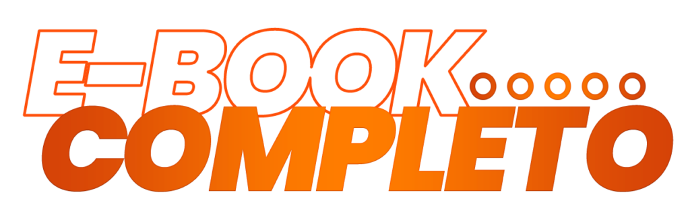
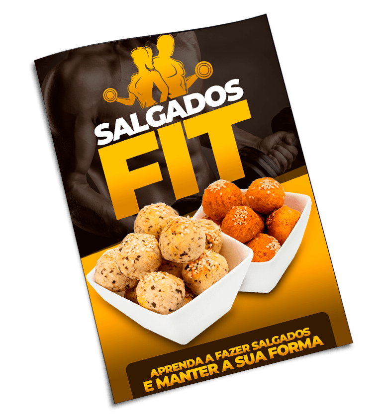
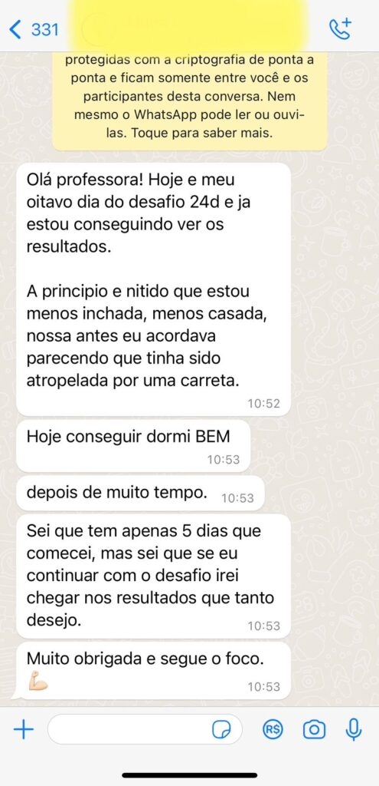
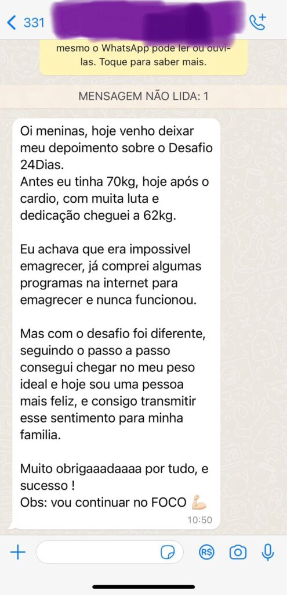
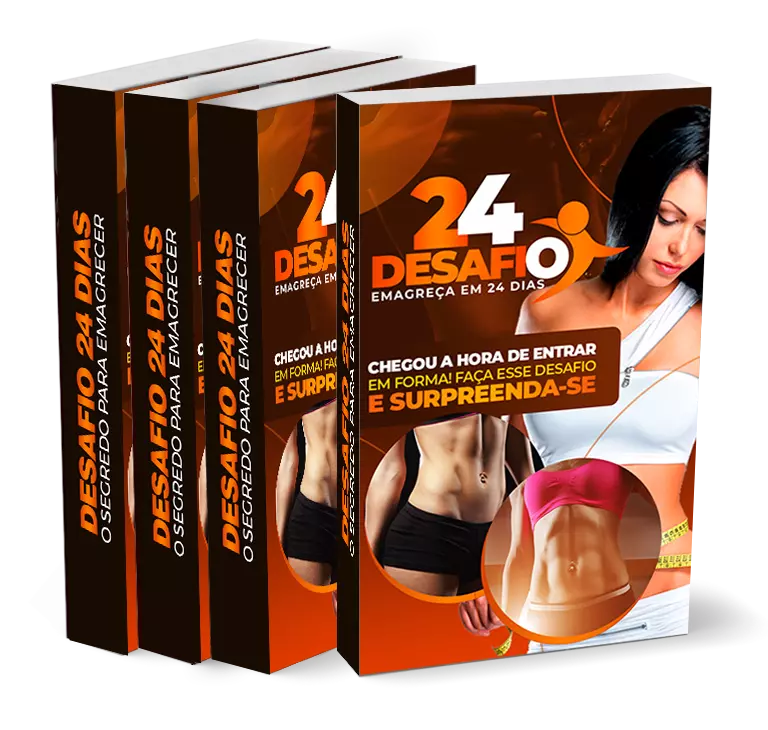

CONHEÇA A FÓRMULA INFALÍVEL PARA
ELIMINAR DE 3 A 7KG SEM PASSAR FOME
Um guia completo para transformar seu corpo e deixar qualquer
homem completamente obcecado por você!
CONFIRA O QUE VOCÊ VAI APRENDER NESTE DESAFIO EM 24 DIAS
Como aplicar os príncipios básicos do emagrecimento;
Como definir a quantidade certa das refeições;
Como emagrecer bebendo agua;
Como seguir o Desafio da forma correta;
Como organizar a sua cozinha e compras;
Como melhorar a sua autoimagem;
Como criar disciplina e controle;
E muito mais...
QUEM PRECISA DESTE GUIA COMPLETO
ENSINANDO PASSO A PASSO?
Pessoas que estão com autoestima baixa;
Pessoas que não aguentam mais piadinhas por causa do seu peso;
Pessoas que buscam melhorar sua saúde;
Pessoas que querem usar roupas que sempre sonhou;
Pessoas que não conseguem subir na balança;
Pessoas querem viver uma nova vida a partir de agora.
Se você se indentificou com pelo menos uma das situações cima,
clique no botão abaixo e receba o e-book com os bônus em seu E-mail
agora mesmo.

APROVEITE! E RECEBA DE BRINDE ESSES BÔNUS INCRÍVEIS
BÔNUS 01
Receitas Fit Almoço e Jantar
Receitas Fit é um guia com receitas deliciosas de almoço e jantar,
sem perder o foco da dieta.. Você também pode imprimi-la para
consultar como referência rápida sempre que precisar.

BÔNUS 02
Salgados Fit
Salgados Fit é um guia com receitas deliciosas de almoço e jantar,
sem perder o foco da dieta.. Você também pode imprimi-la para
consultar como referência rápida sempre que precisar.
BÔNUS 03
Sucos Detox
Suco Detox é um guia com sucos detox deliciosos para ajudar na sua
reeducação alimentar. Você também pode imprimir para consultar como
referência rápida sempre que precisar.
VEJA O QUE ESTÃO DIZENDO DO NOSSO PRODUTO



OFERTA ESPECIAL
PROMOÇÃO ENCERRA EM POUCOS MINUTOS
48 Minutos
43 Segundos
DE R$147,99 POR APENAS
R$57,00
VOCÊ ESTÁ SEGURO, FIQUE TRANQUILO!
O código de defesa consumidor (Art. 49) garante 7 dias para solicitar
reembolso em caso de insatisfação com o produto. Nós confiamos tanto em
nossos estudos e pesquisas que lhe garantimos 15 dias de garantia
incondicional!
DÚVIDAS FREQUENTES
O que é isso tudo?
Como eu vou receber esse guia?
Em quanto tempo vou ter resultados com o que vou aprender nesse
programa?
E se eu não tiver tempo para estudar?
Como vou receber acesso ao método?
Existe alguma garantia que o programa funciona?
Termos de uso – Políticas de Privacidade
Este produto não garante a obtenção de resultados. Qualquer referência
ao desempenho de uma estratégia não deve ser interpretada como uma
garantia de resultados. Para garantir que as estratégias tragam
resultados, é necessário aplicar todos os ensinamentos conforme o
recomendado. Os resultados podem variar e dependem unicamente de cada
pessoa em colocar em prática as estratégias aprendidas. Lembre-se que
cada um tem sua individualidade, experiência e rotinas, não compare seu
resultado com o de outros e siga dando o seu melhor todos os dias. A
chave para ter resultados e sucesso é a consistência.